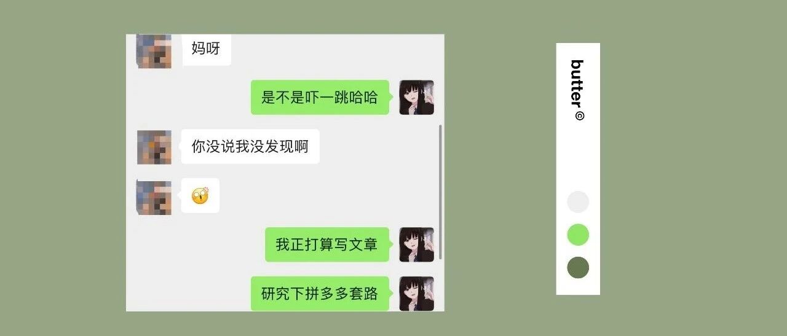

被拼多多的套路坑了....
点击关注秋秋很开心
每周一篇好用APP、学习、成长干货

图：@网络
文：@秋秋
大家好，我是秋秋。
今天周一，早上起来元气满满。
这时候，我朋友给我发了一个拼多多链接让我给她砍一刀，还说就差几块钱了。

虽然我以前没有参与过，但想着举手之劳，就来一下。
谁知结果：


我直接被幸运之神眷顾了！！！
本来给她砍一刀，谁知拼多多设置我必须也参加抽奖才行。
那我这一大清早滴，直接就能免单了？

套路，也在这时候开始了......
虽然是直接免单，但东西却不能邮寄给我。
而是那个券是减免，让我选东西。
我选了一个按摩椅，5000块的东西这时候就已经砍去92%，还差8%。
那我就砍一下吧。
谁想到我第一下就砍掉38块钱，就还剩4%！

那这很好砍啊！我有点小激动～
怪不得那么多人发砍一刀呢。
我开始邀请朋友，让她们给我砍。
前10个人，每个人都能砍很多。
没费多大力气，就砍到了2%。
但是，邀请的人多了之后，再有人砍，就只能砍去0.01元了。
而进度百分比却显示非常接近，就还差1%！！！

（大多数人砍去0.01元）
这时候，我已经嗅到了套路的味道。
原因是，我发现这里有个已砍价格。
一般来说，砍到最后都是差几块钱，所以这里给的价格都是整数。

你用最近的一个整数，减去现在已砍的价格，剩多少除以0.01，就是差多少人。
比如现在砍去的是4996.22元，距离整数5000块，还差
5000 - 4996.22 = 3.78 （块）钱。
按照每次每个人砍去0.01，那就是还需要378人。
哪怕进度上写的只剩00.05%！

可是，很多人都不知道，只盯着那个百分比看！
再来看：
你已经砍下了3991.47元的Airpods，价格应该是4000元。
还差 4000-3991.47= 8.53元
那就是差500～853人帮你砍。

你看，它还故意把百分比写这么大！实际上每个人砍到最后，百分比都是差：
00.1
00.05
但砍去的价格才是关键！
2000块钱的小度，你砍去了1997.79元。
还差2000-1997.79= 2.21(元）钱。
实际就是要221人帮你砍。

它告诉你差00.06%，只是避重就轻！
看清楚物品价格，（整数 - 已经砍去价格），除以0.01，就是你实际要邀请的人数。
别以为只有你快砍成了，别以为只有你还差00.06%！
实际上这样的百分比，有好多人，
距离砍成、都还差得远。
而我为什么说拼多多套路，因为它没有告诉你还差300人，还差500人。
让大多数人以为就还差00.06（那是进度），以为就还差6个人！

这时候，我请教了一个有经验的朋友，因为我想知道怎么能砍成。
他说你可以花钱，让别人给你砍。
我觉得这是个好办法，就建了一个群。
砍不砍成已经不重要了，而是我要知道，大家都在发的砍一砍：
到底需要消耗多少人、多少时间，
才能砍成？
如果能写成一篇文章，让大家看清楚，比砍成东西有价值多了。
这样我用了几个小时，群里前前后后差不多有200人帮我砍，我出价是0.5一次，花费共100～120元。

（砍一刀支出）
但是给这200人每个人都要发红包，聊天、维持群秩序，这差不多花了我6个小时时间。
我中午就只吃了泡面，眼睛一刻不能离开手机。
对比我剪辑视频1小时是赚500块钱。
所以，在保证人能源源不断的情况下，差不多需要12个小时连续不停，让400人帮我砍，我才能砍成。
400人倒是可以，但12小时，我觉得可真是太累了。
但是，你朋友圈里有400人能帮你砍吗？
你能连续12小时，一刻不停，都用在砍一刀上吗？

现在，每天都有很多人给我发帮忙砍一刀，给我发各种拼多多链接。
今天，我就亲身实践一下才知道：
这个套路，不值得。
也许大部分朋友圈能没500个以上好友帮你砍，更不可能12个小时，一直不停放砍一刀上。
大多数人砍一刀的概率，就是砍到最后，朋友很烦，自己也坚持不下去。
最后，我一个朋友给我说，他的朋友，好多都砍成了。
就用了几十块钱，让好几百个人帮忙砍的。
我笑而不语。
套路的开始，就是极低的诱惑......
请再次阅读一遍文章吧。
你距离砍成，就差
00.1

ps: 大家算算这个集美，要砍成大概用多少人？
ps：还有人说，新用户砍的多，我用了我的新华为手机注册了新号，砍了0.05元，正常人砍去0.01元，也是杯水车薪。
ps：怎么看商品价格？砍到最后其实都差几块钱，就用整数就可以。
ps：当然，还有其他外挂方法，交几十块钱，就能砍成价值几千的东西。
但这种好事，利率5000%？谁还上班？
其他文章推荐：

原创文章，转载请告知本人并标注来源
粉丝vx：qiuqiu5261（朋友圈更新日常）
商务合作：17865514429 （微信）
请注明来意 :)
@微博：秋秋一日甜
喜欢记得星标，让我们一起成长